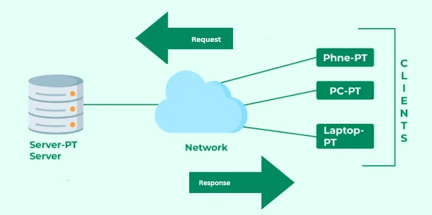

Client/Server Model

The client/server model is a distributed application structure that partitions tasks or workloads between the providers of a resource or service, called servers, and service requesters, called clients. This model is a fundamental part of network computing.
Key Components
- Client: The client is a machine or process that requests services or resources from another machine or process.
- Server: The server is a machine or process that provides services or resources to clients.
- Network: The network connects clients and servers, enabling communication and data exchange between them.
Characteristics of Client/Server Model
- Centralized Resources: Resources such as files, databases, and applications are centrally located on servers.
- Scalability: Servers can be scaled up (adding more resources) or scaled out (adding more servers) to handle increased demand.
- Security: Centralized control over resources allows for better security and access management.
- Maintainability: Easier to maintain and update as changes are made centrally on servers.
- Specialization: Clients and servers can be optimized for their specific roles.
Types of Client/Server Architecture
- Two-Tier Architecture: In this architecture, the client directly interacts with the server. The presentation layer and application logic are combined on the client side, and the data storage is on the server side.
- Three-Tier Architecture: This architecture separates the presentation layer, application logic, and data storage into three distinct layers. The client handles the presentation, the application server manages the logic, and the database server handles data storage.
- Multi-Tier Architecture: Extends the three-tier architecture by adding more layers, such as additional application servers, web servers, or specialized service layers.
Advantages of Client/Server Model
- Resource Sharing: Centralized resources can be efficiently shared among multiple clients.
- Centralized Control: Easier to manage security, updates, and maintenance from a central location.
- Scalability: Can be easily scaled to meet the demands of a growing number of clients.
- Reliability: Centralized servers can be made highly reliable with redundancy and failover mechanisms.
Disadvantages of Client/Server Model
- Single Point of Failure: If the server fails, all clients lose access to the services or resources.
- Network Dependency: Relies on a robust network infrastructure; network issues can affect performance and accessibility.
- Cost: Setting up and maintaining servers can be costly, particularly for small organizations.
Examples of Client/Server Applications
- Web Browsers and Web Servers: Web browsers (clients) request web pages and resources from web servers.
- Email Clients and Email Servers: Email clients (e.g., Outlook, Gmail) connect to email servers to send and receive emails.
- Database Clients and Database Servers: Database management systems (clients) interact with database servers to query and manage data.
Conclusion
The client/server model is essential in modern computing, providing a structured way to distribute resources and services. It forms the backbone of many internet and network-based applications, offering scalability, centralized control, and efficient resource utilization.